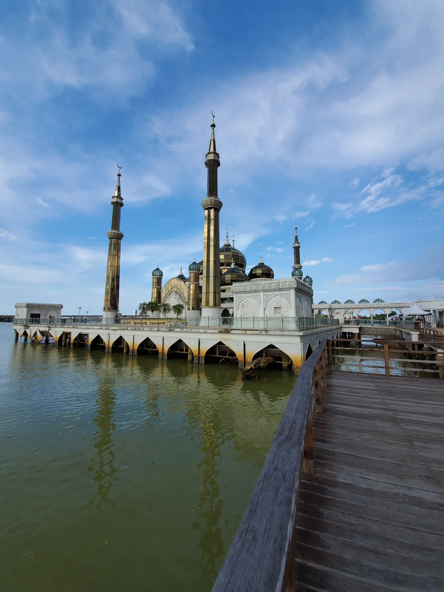
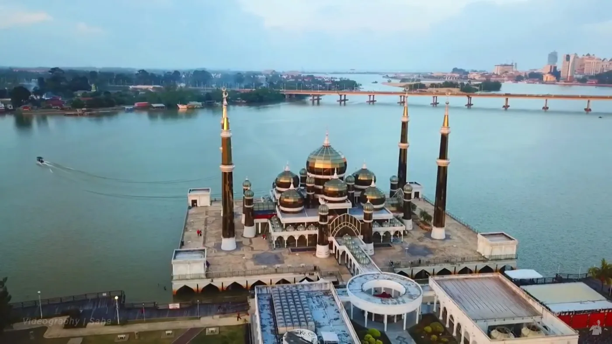
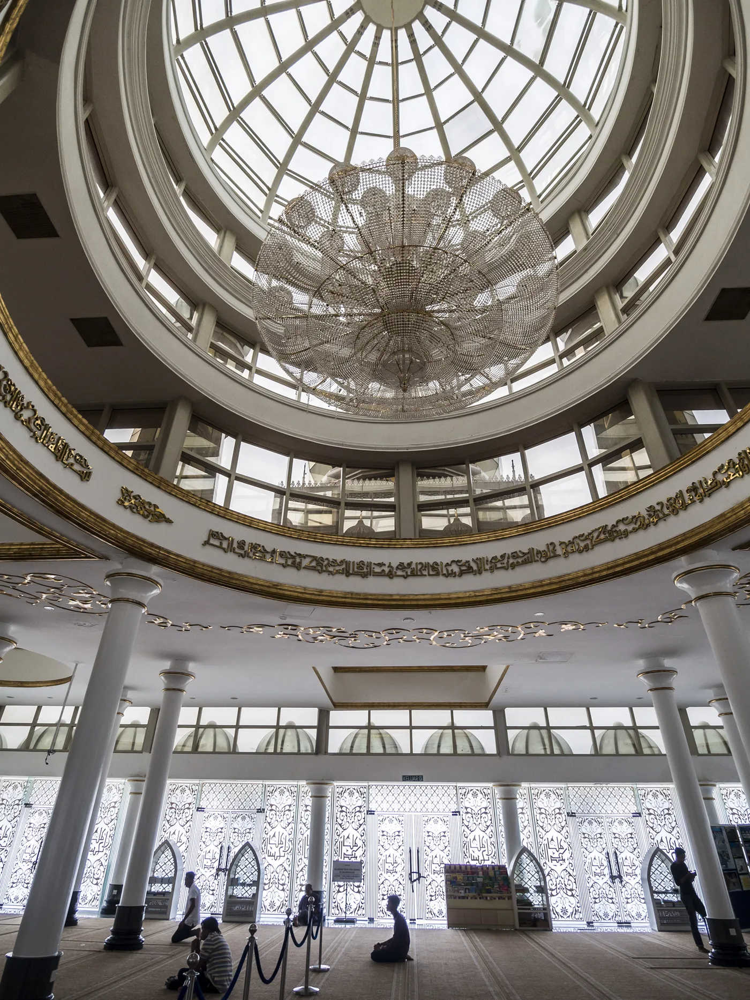
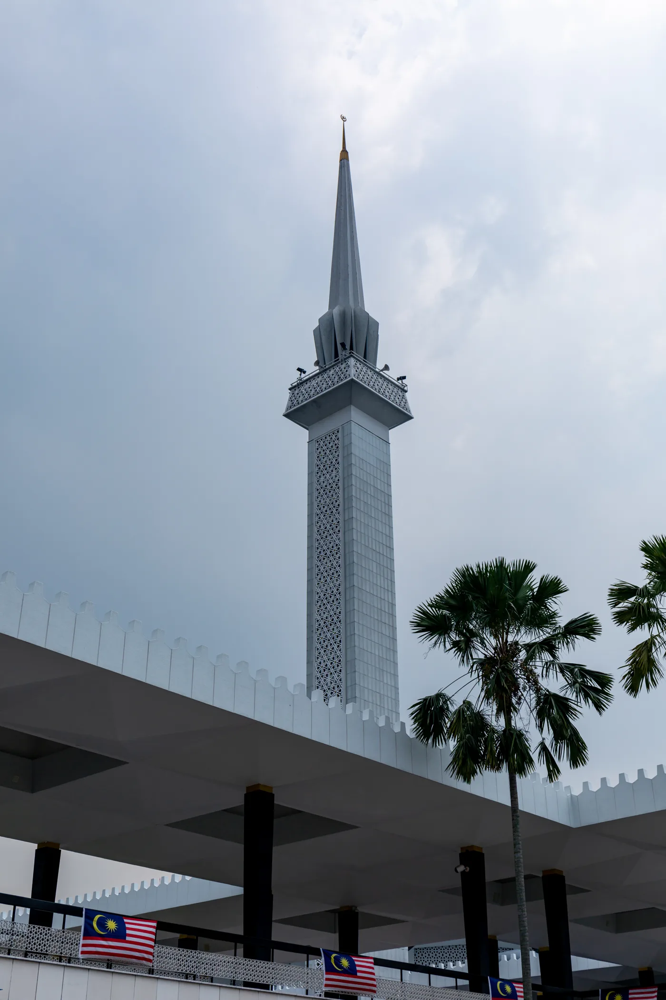
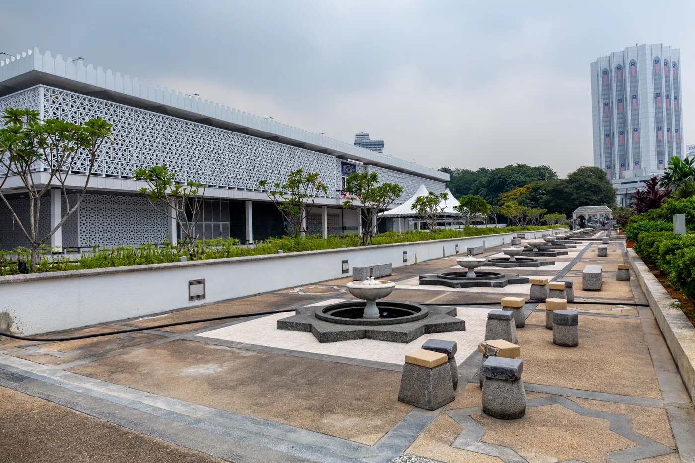
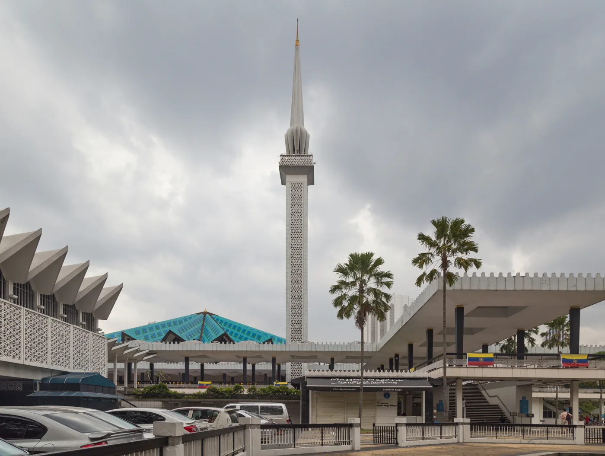

Accueil › Blog › Top 3 des plus belles mosquées de Malaisie
Classement · 8 min de lecture · 2026-03-02
Top 3 des plus belles mosquées de Malaisie
Difficile de choisir tant la Malaisie a multiplié, depuis son indépendance, les mosquées-manifestes. Voici néanmoins notre sélection des trois plus spectaculaires, du verre flottant de Terengganu au granit rose de Putrajaya, avec pour chacune l'histoire, les chiffres et les détails qui justifient sa place sur ce podium.








#1 — Masjid Kristal, la mosquée de verre flottante
À Kuala Terengganu, capitale de l'État du Terengganu sur la côte est de la péninsule malaise, la Masjid Kristal (« mosquée de cristal ») occupe la première place pour une raison simple : c'est l'une des seules mosquées au monde bâtie presque entièrement en verre, en acier et en aluminium, posée sur une plateforme qui semble flotter à la confluence de la rivière Terengganu et de la mer de Chine méridionale. Construite sur l'île de Wan Man, inaugurée en février 2008 par le sultan de l'État, elle constitue la pièce maîtresse du Parc de la civilisation islamique (Taman Tamadun Islam), un vaste complexe qui présente, sur cette même île, des répliques à échelle réduite d'une vingtaine de monuments islamiques célèbres à travers le monde, de la Kaaba au Taj Mahal. Sa structure d'acier et de verre feuilleté, plutôt qu'une maçonnerie traditionnelle, lui permet un tour de force que ni la pierre ni le béton ne pourraient offrir : changer littéralement d'apparence selon l'heure et la météo. Dorée et cuivrée au lever et au coucher du soleil, elle vire à l'argenté sous le plein soleil de midi et se pare, la nuit venue, d'un jeu de lumières LED programmables qui colorent tour à tour dômes et minarets. Sa position, presque entièrement entourée d'eau, ajoute un effet miroir quasi permanent qu'aucune autre grande mosquée d'Asie du Sud-Est ne reproduit à cette échelle. Elle peut accueillir environ 1 500 fidèles, un gabarit modeste comparé aux deux mosquées suivantes de ce classement, compensé par une identité visuelle qu'aucune autre mosquée du pays ne revendique.
#2 — La mosquée Putra, le granit rose sur le lac
À Putrajaya, ville administrative fédérale construite de toutes pièces à la fin des années 1990 pour désengorger Kuala Lumpur, la mosquée Putra doit sa place sur ce podium à un choix de matériau aussi simple que radical : un dôme et des murs en granit rose, une teinte que l'on ne retrouve dans aucune autre grande mosquée d'Asie du Sud-Est, directement inspirée des camaïeux de rose de la mosquée du Cheikh Lotfollah et d'autres édifices persans safavides. Achevée en 1999, elle peut accueillir environ 15 000 fidèles répartis entre la salle de prière et l'esplanade, et se dresse aux trois quarts au-dessus du lac artificiel de Putrajaya, creusé spécialement pour donner à la nouvelle capitale administrative un visage monumental. Son minaret, qui culmine à 116 mètres — l'un des plus hauts d'Asie du Sud-Est — est structuré en cinq sections distinctes, un découpage qui symbolise les cinq piliers de l'islam ; l'ensemble du complexe, avec sa grande cour à arcades et ses portes sculptées, assume un mélange revendiqué d'influences moyen-orientales (perse et moyen-orientale pour le vocabulaire décoratif) et malaises (dans les proportions générales et certains détails de toiture). Elle est aujourd'hui l'une des mosquées les plus visitées du pays, notamment en raison de sa proximité avec le complexe du Premier ministre et les administrations fédérales qui l'entourent.
#3 — Masjid Negara, le manifeste de l'indépendance
La Mosquée nationale de Kuala Lumpur ferme ce podium, non pas pour son ancienneté au sens absolu — elle date de 1965, quand plusieurs mosquées de ce site remontent à plusieurs siècles — mais pour sa radicalité formelle. Inaugurée le 27 août 1965, moins de dix ans après l'indépendance de la Malaisie (1957), elle est conçue dès l'origine comme un symbole national plutôt que comme une simple mosquée de quartier : sa toiture principale, un parapluie de béton plissé à 18 pointes, rompt délibérément avec la coupole hémisphérique traditionnelle du monde ottoman ou moghol, et son minaret en forme de fusée à ailerons, haut de 73 mètres, reste, soixante ans après son inauguration, l'une des silhouettes les plus reconnaissables de toute l'architecture mosquée du XXe siècle. Le chiffre 18 n'est pas arbitraire : il additionne les treize États fédérés de la Malaisie et les cinq piliers de l'islam. Le complexe, qui peut accueillir environ 15 000 fidèles, s'étend sur près de 5 hectares de jardins et de bassins réfléchissants, sur le site de l'ancien terrain de polo du Selangor Turf Club en plein cœur de la capitale. Le projet, mené par une équipe d'architectes britanniques et malaisiens réunis pour l'occasion, a volontairement cherché à s'affranchir des références ottomanes ou mogholes alors dominantes dans l'imagerie mondiale de la mosquée, pour proposer un vocabulaire propre — une démarche que l'on retrouvera, des décennies plus tard, dans la mosquée Putra puis la Masjid Kristal.
Des critères forcément subjectifs
Ce classement reste évidemment une question de goût — la « Mosquée bleue » de Shah Alam (mosquée du Sultan Salahuddin Abdul Aziz), avec l'un des plus grands dômes du monde et une capacité dépassant parfois les 24 000 fidèles, ou la doyenne Masjid Kampung Kling à Malacca, un rare exemple de mosquée malaisienne au toit étagé de style pagode chinoise datant du XVIIIe siècle, auraient tout aussi bien mérité leur place. Mais Masjid Kristal, Putra et Negara ont ceci de commun qu'elles illustrent, chacune à sa manière et à une génération d'écart (1965, 1999, 2008), la même ambition constante depuis l'indépendance : faire de la mosquée malaisienne un manifeste architectural et une affirmation d'identité nationale, plutôt qu'une simple reproduction des modèles importés du Moyen-Orient.
À découvrir
Mosquées citées dans cet article

À propos du contenu de cette page — Ce site propose un contenu éditorial et culturel rédigé avec soin et le souci du respect des traditions religieuses concernées ; il ne constitue pas un avis théologique ou une source d'autorité religieuse. Malgré nos vérifications, des erreurs, imprécisions ou approximations peuvent subsister. Si vous en repérez une, merci de nous la signaler via la page Contact ou par e-mail à qibla.mosk@gmail.com — nous la corrigerons avec gratitude.